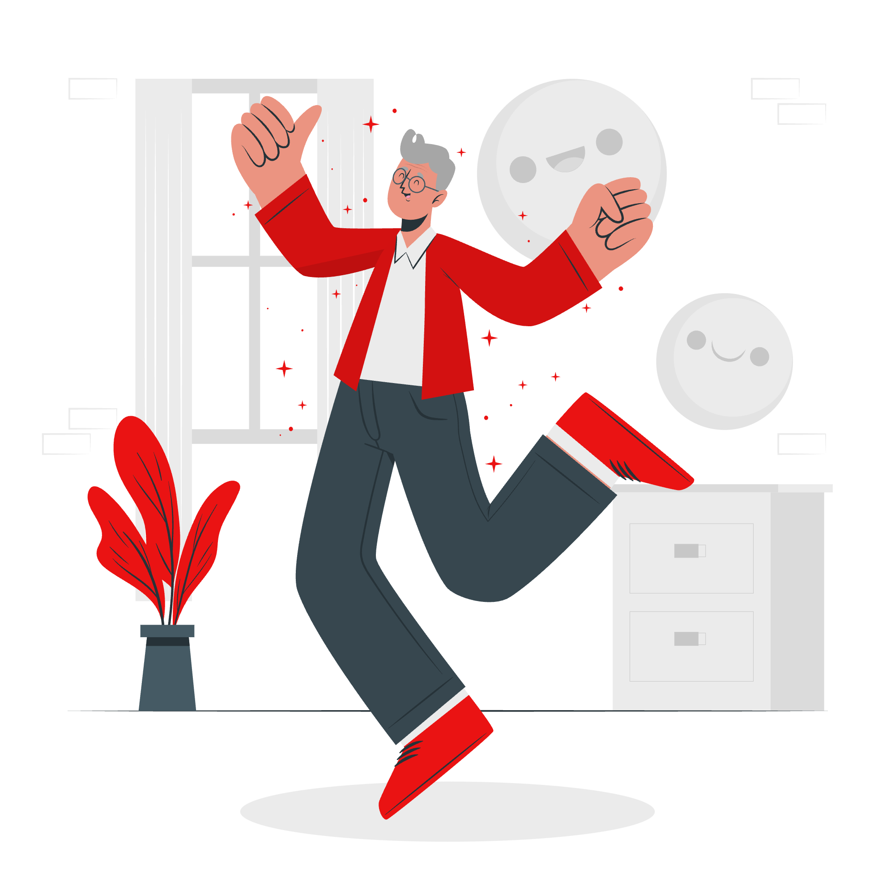

Why Mental Health Matters
The mental well-being of individuals working in the tech industry directly
impacts
their performance, productivity, creativity, and overall job satisfaction, all crucial for
success.
Addressing mental health concerns can cultivate a more engaged and resilient workforce,
ultimately
benefiting both employees and employers.
Prioritising mental health can boost talent retention and recruitment, as individuals feel
supported
and valued. Research from "The Role of Mental Health on Workplace Productivity: A Critical
Review of
the Literature", clearly shows that poor mental health (primarily depression and anxiety)
correlates
with reduced productivity through absenteeism and presenteeism. Additionally, stress, anxiety,
and
burnout were identified as key drivers of reduced productivity, with 45% of respondents saying
that
their mental health is negatively impacting their work (Champa Ha, 2023).
Do you currently have mental health?
(Present)
Do you currently have mental health?
(Present)
From the pie chart, 66% of respondents currently identify as
having mental health disorder. This is a stark indication of the mental health challenges
prevalent within the tech industry. The bar chart further breaks down this data by country,
showing a substantial number of individuals in the United States and the United Kingdom
reporting current mental health disorders, followed by Canada and Germany.
Do you have mental health in the
past? (Past)
Do you have mental health in the
past? (Past)
Reflecting on past conditions, more than half of the survey participants acknowledged having
experienced mental health issues previously. This historical data, illustrated in both the bar
chart and pie chart, shows that 67.7% of respondents have faced mental challenges in the past.
With 66% in the present context and 67.7% in the past selecting "Yes" when asked about
mental health status, these responses could reflect a need for greater
mental health literacy and supportive resources in the industry.

A Personal and Professional Stake in Mental Health
As individuals working in the tech sector, we are doubly invested in
understanding mental health challenges within our industry.
By understanding the complexities of mental health within our industry, not only is it
professionally relevant but also personally meaningful. By shedding light on this important
issue through data analytics and visualisations, we have the opportunity to drive positive
change and create healthier, more supportive work environments for all.
Lack of Mental Health Support
A recent report by AON and TELUS Health, the "inaugural Asia Mental Health Index
Report (2023)", which surveyed workers across 12 locations in Asia has revealed that a
staggering 82% of workers in Asia are at a high to moderate risk for mental health issues.
This alarming statistic was further compounded by significant barriers to accessing support.
" Nearly 43% of respondents cite cost as the biggest obstacle to accessing mental health
support. "
This highlights financial limitations as one of the main causes of preventing individuals from
seeking help. Additionally, a lack of information and knowledge about available resources also
further hindered access to vital support systems for individuals to get help.